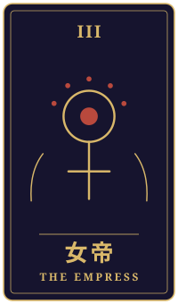
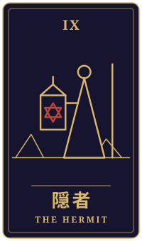

値札の裏
物語の手前に、ひとつの相談がありました。三枚のタロットをめぐるやりとりを、聞こえたままに書き留めています。
持ち込まれた相談
商店街で夫と小さなお惣菜屋をやって三十年近くになります。食料品の消費税が下がるかもしれないと聞いて、常連さんは「よかったね」と言ってくれますが、私は値札もレジも全部やり直しかと思うと、正直ため息が出ました。二年で戻るならまたやり直しです。本当は、これをきっかけに店を閉めようかと考えている自分がいます。夫は何も言わずに毎朝コロッケを揚げていて、その背中を見ると言い出せません。東京にいる息子に継いでほしいとも思えないし、やめたら私に何が残るのかもわかりません。このまま続けるべきか、区切りをつけるべきか、迷っています。
タロットの読み解き

過去
月・正位置
月の正位置は、霧の中を手探りで歩くような、先の見えにくい時間を映すカードです。三十年近く続けてこられたお店を前にして、今も心が揺れているのは、それだけ大切に積み重ねてこられた証なのかもしれませんね。

現在
女帝・正位置
女帝の正位置は、実りや愛情、豊かさを象徴するカードです。毎朝コロッケを揚げるご主人の背中も、常連さんの「よかったね」という言葉も、このお店が人と人とを温めてきたことを静かに示しているように感じられます。
ため息が出るほどの手間や、先の見えなさがあるのは確かでしょう。それでも、ここまで育ててこられた土台は、決して小さくないものですよ。

未来
隠者・逆位置
隠者の逆位置は、ひとりで抱え込み、殻に閉じこもってしまう状態を映すことがあります。ご主人にも息子さんにも言い出せず、ひとりで答えを探そうとしている今のご自身の姿と、どこか重なるところがあるかもしれません。
ただ逆位置は、閉じた扉を少しだけ開けるように、人と言葉を交わす合図とも読めます。まずは「実はこう考えているの」と、ご主人に素直に話してみることから始めてもよいのかもしれません。
最後に
続けるか区切るかという問いには、カードは一つの答えを示しません。ただ、今のあなたに必要なのは、ひとりで結論を急ぐことより、胸の内を夫婦で分かち合うことなのかもしれません。
消費税の見通しや店の経営の数字については、税理士さんや商工会など専門の方にも相談されると、より安心して考えられるでしょう。カードは気持ちを整える鏡として、そっと受け取っていただければ幸いです。
帰り際の問い一人でいることは、守りか、逃避か。
読み解きは、タロット占い「月夜のアルカナ」が、この相談と引かれた三枚から返したものです。小説は同じ三枚を、別の角度から描いています。相談者は物語のための架空の人物です。相談文・読み解き・短編本文は、いずれも生成AIを使って制作しています。
物語に戻る